INPUT / SYSTEM In this interactive form, kolam becomes a collaborative system. The visuals are generated using custom p5.js scripts, controlled by participants.
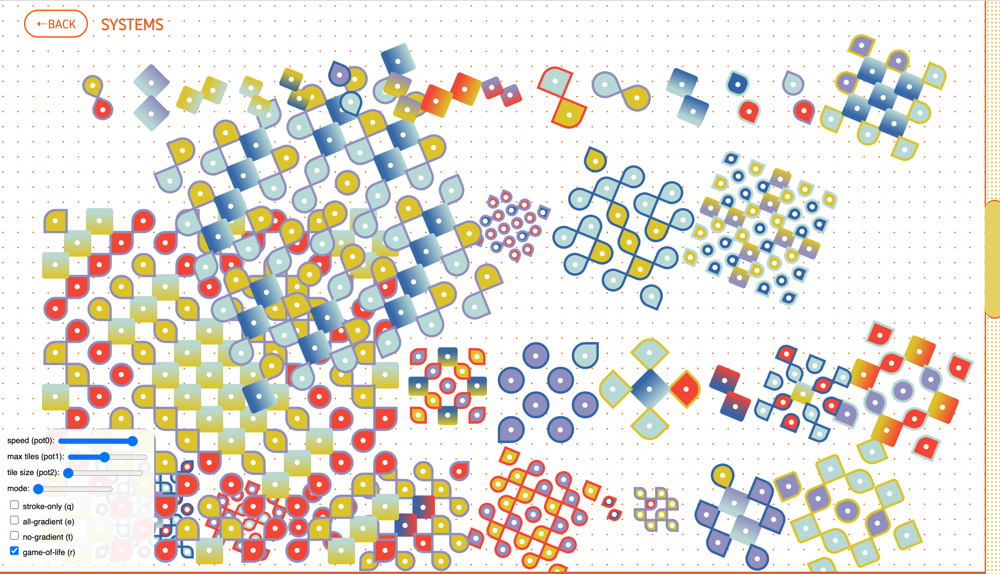

Anatomy of a Kolam
asks what changes when kolam-making moves from hands into machines. The research looks at how
cultural forms can move through automated systems while keeping touch and ritual in view.
speculative / critical design,
physical computing,
interactive experiences
Independent Research by Aditi
Neti
This project was undertaken as part of the inaugural 2024-25 cycle of the
Design Research Fellowship. Organised by SAM Design Collection, an initiative of Singapore Art Museum, this new
platform supports alternative pathways for and forms of design(-adjacent) research.
VISIT THE DESIGN COLLECTION→
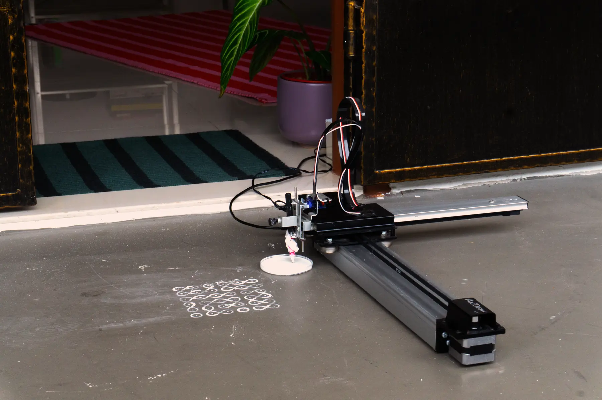
BACKGROUND
A kolam is a traditional form of decorative geometric line art drawn by women, usually with rice flour, on the
ground at the entrance of homes and temples in South India and other parts of Asia. It is a daily ritual and an
auspicious welcome sign connected to prosperity and Goddess Lakshmi. The rice flour also feeds small creatures
like ants and birds.
Traditionally, kolams are created using dry rice flour or a paste made out of rice flour!
Every kolam begins with decisions about geometry, colour, and material.
The act of making it by hand carries its own knowledge: pressure, pace, and material sensitivity.
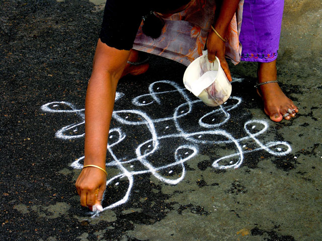
CONCEPT This research explores how kolam-making can move through generative design and human-machine interaction. It studies how creative intention and bodily movement can be carried into a physical-digital experience that respects the cultural significance of the act of making.
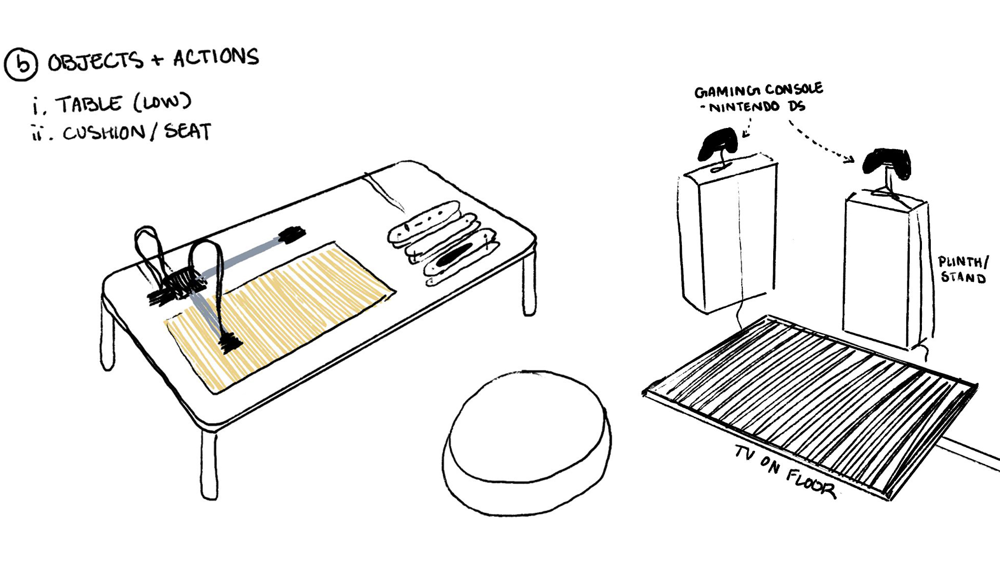
RESEARCH: INTERVIEWS
I conducted interviews with people who have experience in rangoli or kolam making, along with practitioners who
use creative technologies in related work. These conversations trace cultural knowledge and embodied practice
within kolam-making.
Featured: Aarati Akkapedi, Vijaya Mohan and Dr. Vijaya Nagarajan
SEE
INTERVIEWS→
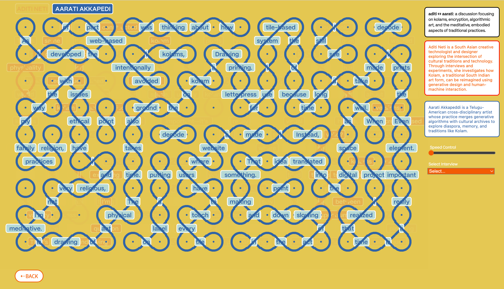
RESEARCH: VISUAL STUDY
This interactive collage, or limited archive, was my way into understanding the embodied knowledge behind kolam
making.
VISUAL STUDY→
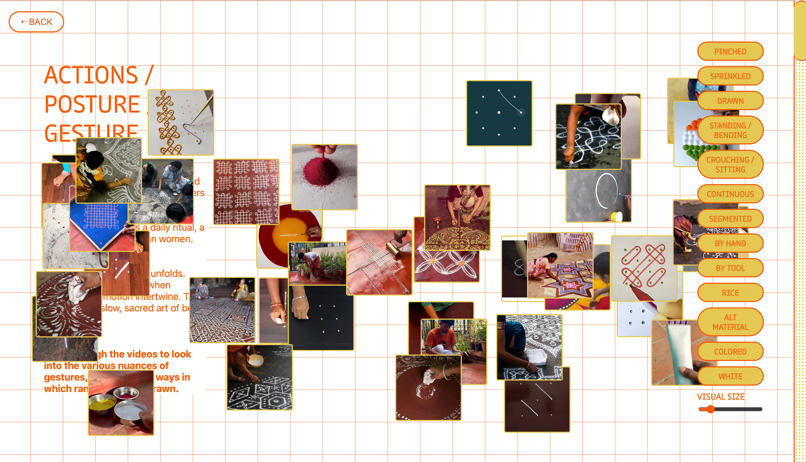
Drawing Down Desires This theoretic interactive explores the visual and sonic resonances between kolam and cymatics, the study of how sound vibrations shape matter into patterns. The device pictured is a custom-built sonic interface that captures spoken desires and translates it into generative Chladni-inspired visuals, simulating the ways kolams and sound both give form to rhythm.
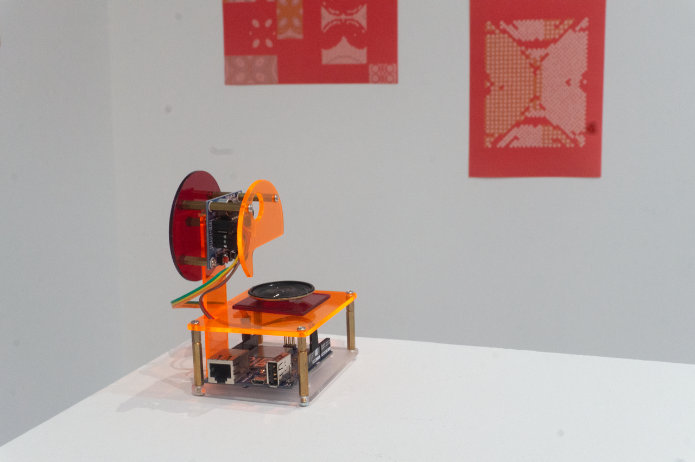
From Hand To Machine
Kolam-making traditionally emphasizes bodily gestures: improvisational hand movements guiding the flow of powder
or chalk. This experiment captures those gestures in real time and translates them into a mechanical drawing
process through an AxiDraw pen plotter.
I used the setup to study how tactility and ritual gesture behave when physical movement passes through a
computational system.
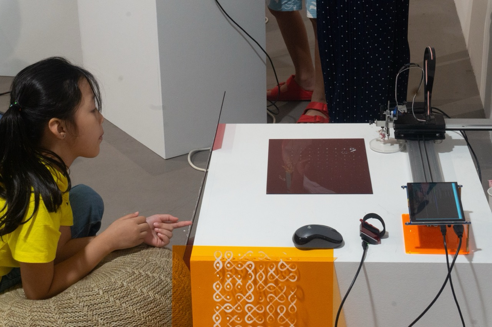
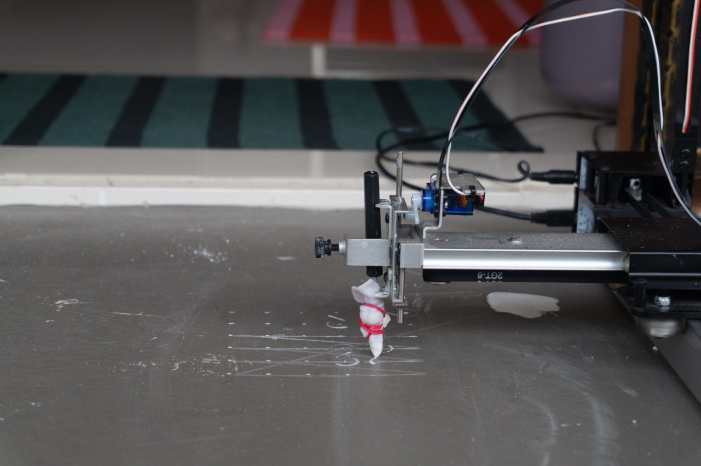
Materiality I tried my best to stay close to the original material of the art form: rice paste. The paste changed consistency over hours, sometimes within minutes. I rarely achieved a smooth consistency across one kolam batch. Those flaws and surprises became another way for the human touch to remain present in the machine-made drawings.
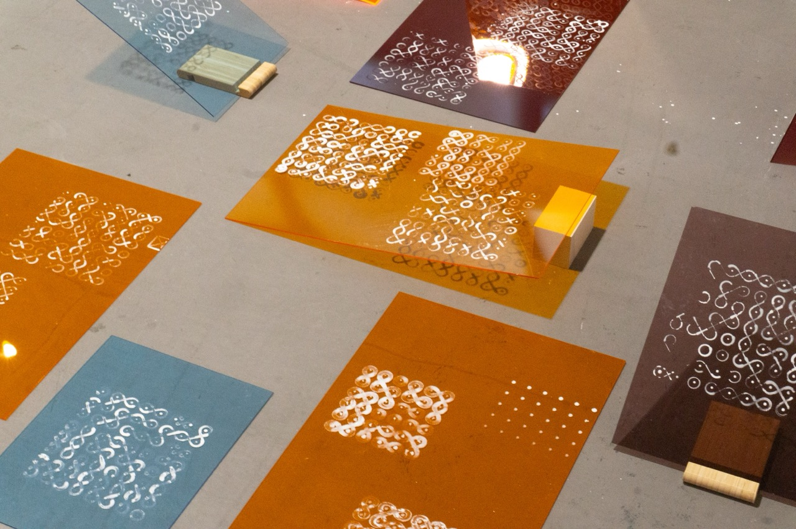
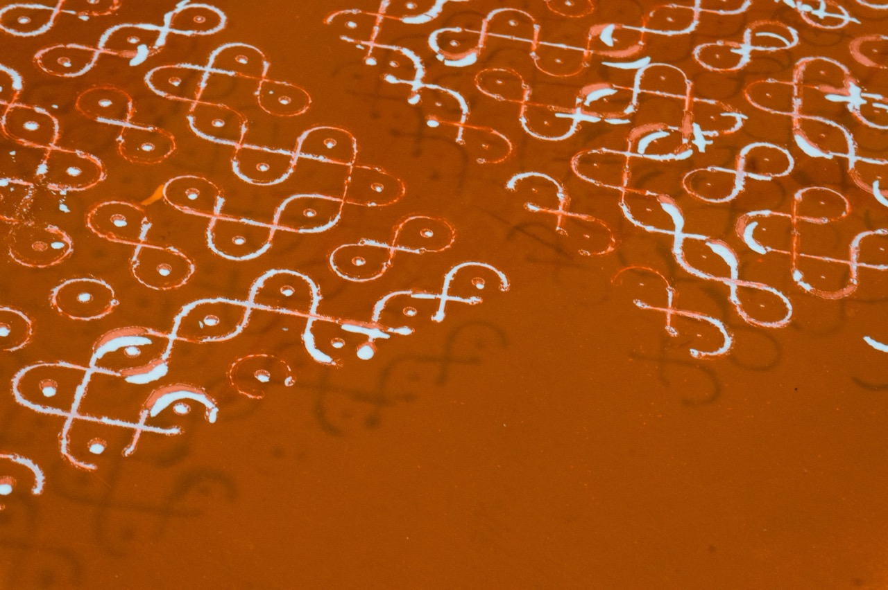
INPUT / SYSTEM In this interactive form, kolam becomes a collaborative system. The visuals are generated using custom p5.js scripts, controlled by participants.

INPUT / SYSTEM Participants could interact with the system using physical controllers such as rotary knobs and sliders. These controls altered tile size, speed, and density.
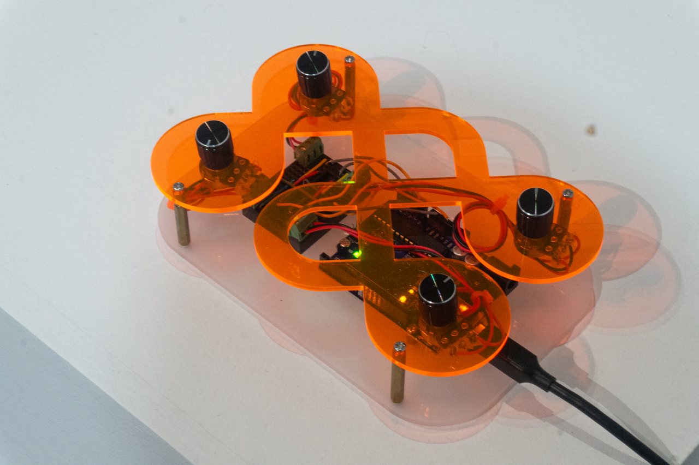
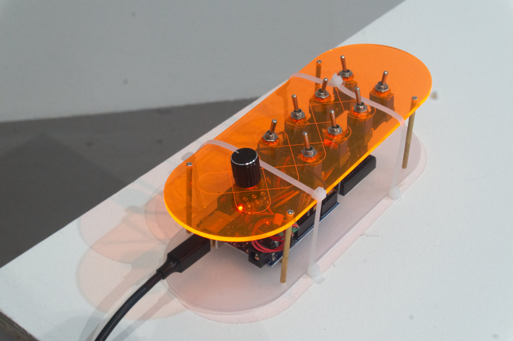
EXHIBITON
Research was presented during Still Rendering, a work-in-progress exhibiton organised by the Singapore Art
Museum.
VISIT MICROSITE→
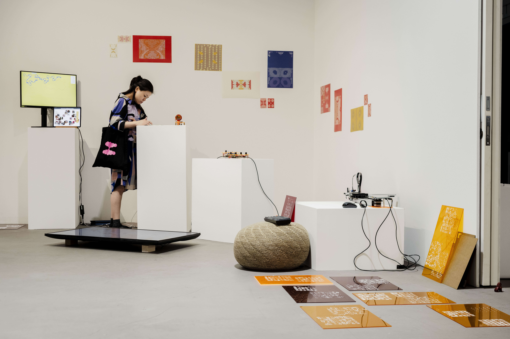
functionditi@gmail.com
© Aditi Neti 2026